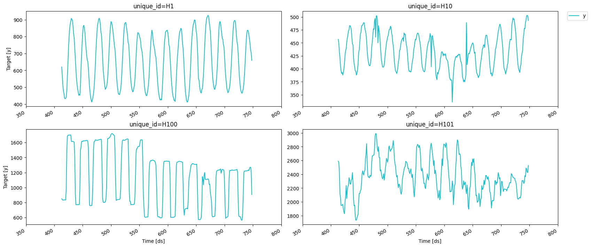
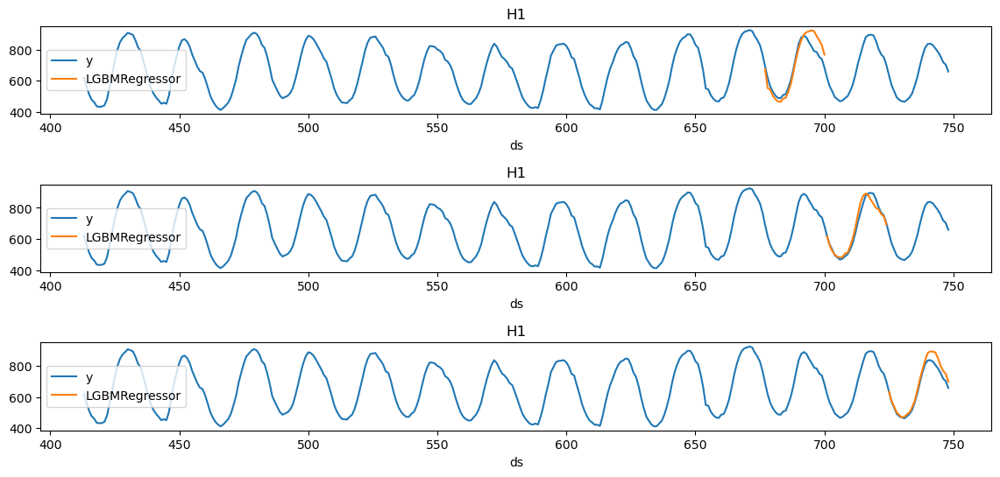

# pip install mlforecast lightgbmCross validation
In this example, we’ll implement time series cross-validation to evaluate model’s performance.
Prerequesites
This tutorial assumes basic familiarity with MLForecast. For a minimal example visit the Quick Start
Introduction
Time series cross-validation is a method for evaluating how a model would have performed in the past. It works by defining a sliding window across the historical data and predicting the period following it.

MLForecast has an implementation of time series cross-validation that is fast and easy to use. This implementation makes cross-validation a efficient operation, which makes it less time-consuming. In this notebook, we’ll use it on a subset of the M4 Competition hourly dataset.
Outline:
- Install libraries
- Load and explore data
- Train model
- Perform time series cross-validation
- Evaluate results
Tip
You can use Colab to run this Notebook interactively 
Install libraries
We assume that you have MLForecast already installed. If not, check this guide for instructions on how to install MLForecast.
Install the necessary packages with pip install mlforecast.
import pandas as pd
from utilsforecast.plotting import plot_series
from mlforecast import MLForecast # required to instantiate MLForecast object and use cross-validation methodLoad and explore the data
As stated in the introduction, we’ll use the M4 Competition hourly dataset. We’ll first import the data from an URL using pandas.
Y_df = pd.read_csv('https://datasets-nixtla.s3.amazonaws.com/m4-hourly.csv') # load the data
Y_df.head()| unique_id | ds | y | |
|---|---|---|---|
| 0 | H1 | 1 | 605.0 |
| 1 | H1 | 2 | 586.0 |
| 2 | H1 | 3 | 586.0 |
| 3 | H1 | 4 | 559.0 |
| 4 | H1 | 5 | 511.0 |
The input to MLForecast is a data frame in long format with three columns: unique_id, ds and y:
- The
unique_id(string, int, or category) represents an identifier for the series. - The
ds(datestamp or int) column should be either an integer indexing time or a datestamp in format YYYY-MM-DD or YYYY-MM-DD HH:MM:SS. - The
y(numeric) represents the measurement we wish to forecast.
The data in this example already has this format, so no changes are needed.
We can plot the time series we’ll work with using the following function.
fig = plot_series(Y_df, max_ids=4, plot_random=False, max_insample_length=24 * 14)
Define forecast object
For this example, we’ll use LightGBM. We first need to import it and then we need to instantiate a new MLForecast object.
In this example, we are only using differences and lags to produce features. See the full documentation to see all available features.
Any settings are passed into the constructor. Then you call its fit method and pass in the historical data frame df.
import lightgbm as lgb
from mlforecast.target_transforms import Differencesmodels = [lgb.LGBMRegressor(verbosity=-1)]
mlf = MLForecast(
models = models,
freq = 1,# our series have integer timestamps, so we'll just add 1 in every timeste,
target_transforms=[Differences([24])],
lags=range(1, 25, 1)
)Perform time series cross-validation
Once the MLForecast object has been instantiated, we can use the cross_validation method.
For this particular example, we’ll use 3 windows of 24 hours.
crossvalidation_df = mlf.cross_validation(
df=Y_df,
h=24,
n_windows=3,
)The crossvaldation_df object is a new data frame that includes the following columns:
unique_id: identifies each time series.ds: datestamp or temporal index.cutoff: the last datestamp or temporal index for then_windows.y: true value"model": columns with the model’s name and fitted value.
crossvalidation_df.head()| unique_id | ds | cutoff | y | LGBMRegressor | |
|---|---|---|---|---|---|
| 0 | H1 | 677 | 676 | 691.0 | 673.703191 |
| 1 | H1 | 678 | 676 | 618.0 | 552.306270 |
| 2 | H1 | 679 | 676 | 563.0 | 541.778027 |
| 3 | H1 | 680 | 676 | 529.0 | 502.778027 |
| 4 | H1 | 681 | 676 | 504.0 | 480.778027 |
We’ll now plot the forecast for each cutoff period.
import matplotlib.pyplot as pltdef plot_cv(df, df_cv, uid, fname, last_n=24 * 14):
cutoffs = df_cv.query('unique_id == @uid')['cutoff'].unique()
fig, ax = plt.subplots(nrows=len(cutoffs), ncols=1, figsize=(14, 6), gridspec_kw=dict(hspace=0.8))
for cutoff, axi in zip(cutoffs, ax.flat):
df.query('unique_id == @uid').tail(last_n).set_index('ds').plot(ax=axi, title=uid, y='y')
df_cv.query('unique_id == @uid & cutoff == @cutoff').set_index('ds').plot(ax=axi, title=uid, y='LGBMRegressor')
fig.savefig(fname, bbox_inches='tight')
plt.close()plot_cv(Y_df, crossvalidation_df, 'H1', '../../figs/cross_validation__predictions.png')
Notice that in each cutoff period, we generated a forecast for the next 24 hours using only the data y before said period.
Evaluate results
We can now compute the accuracy of the forecast using an appropiate accuracy metric. Here we’ll use the Root Mean Squared Error (RMSE). To do this, we can use utilsforecast, a Python library developed by Nixtla that includes a function to compute the RMSE.
from utilsforecast.losses import rmseWe’ll compute the rmse per time series and cutoff. To do this we’ll concatenate the id and the cutoff columns, then we will take the mean of the results.
crossvalidation_df['id_cutoff'] = crossvalidation_df['unique_id'] + '_' + crossvalidation_df['cutoff'].astype(str)
cv_rmse = rmse(crossvalidation_df, models=['LGBMRegressor'], id_col='id_cutoff')['LGBMRegressor'].mean()
print("RMSE using cross-validation: ", cv_rmse)RMSE using cross-validation: 249.90517171185527This measure should better reflect the predictive abilities of our model, since it used different time periods to test its accuracy.
References
Give us a ⭐ on Github